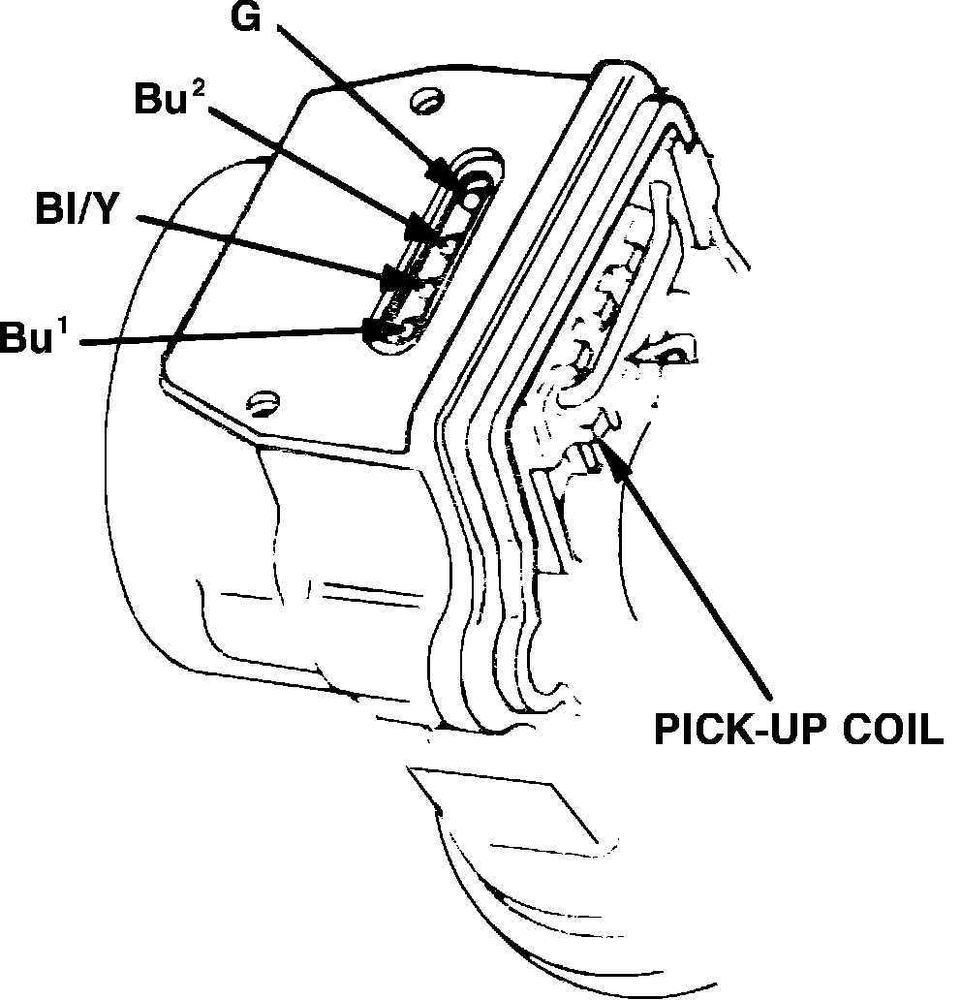
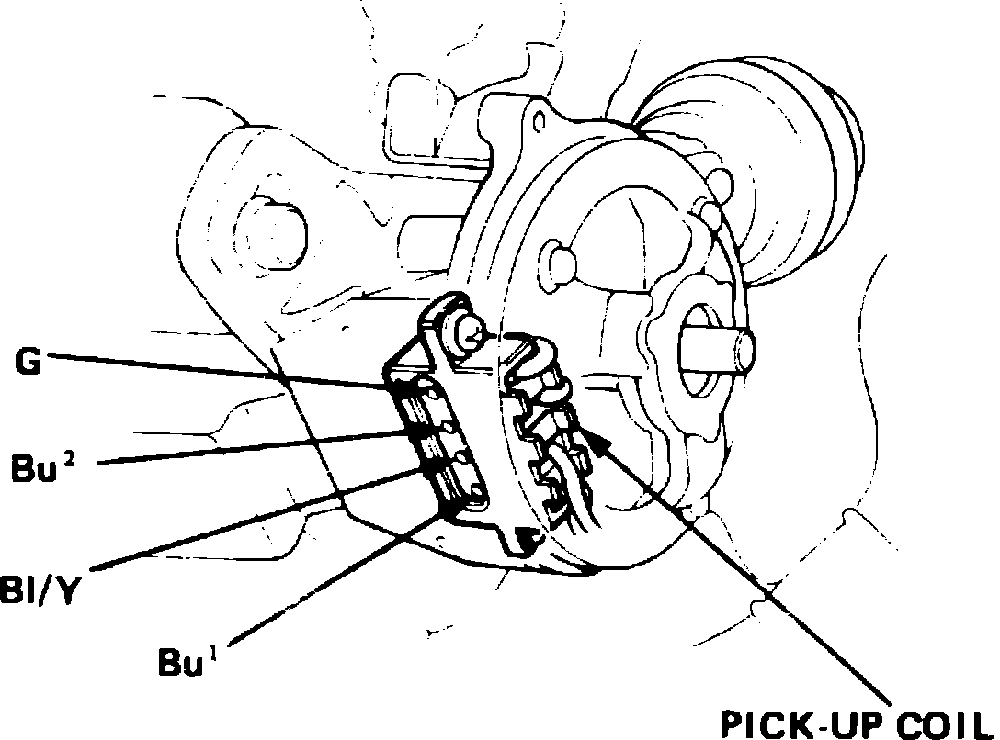
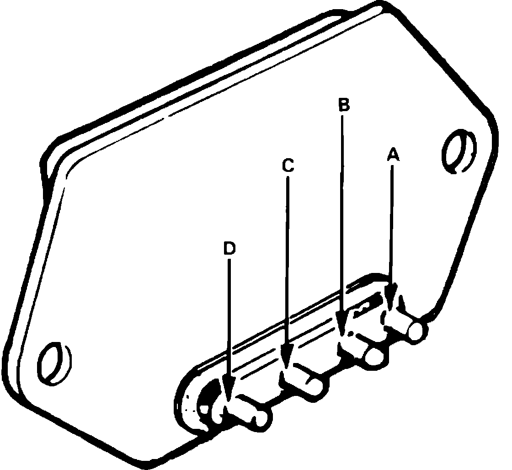
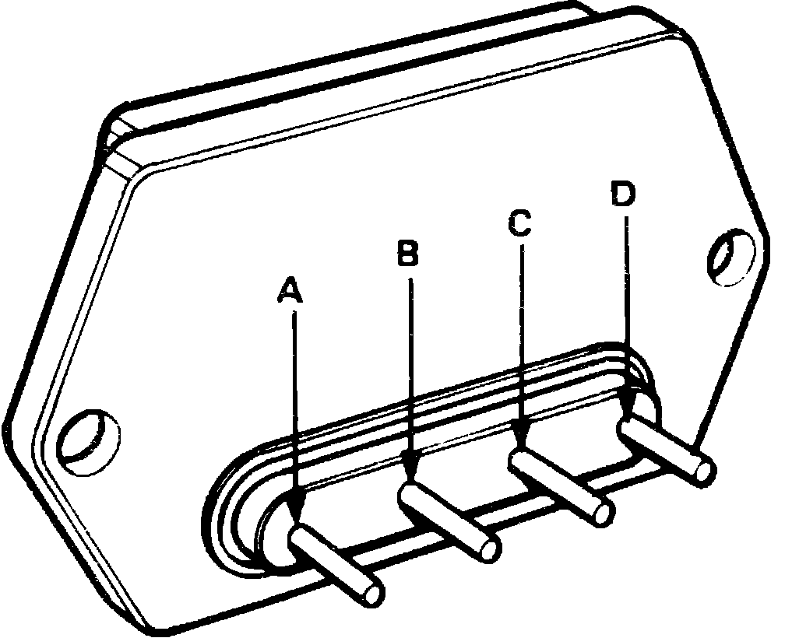

Ignition Control Module: Testing and Inspection
Fig. 5 Pickup Coil Terminal Identification.:

Fig. 6 Pickup Coil Terminal Identification.:

Fig. 7 Igniter Terminal Identification.:

Fig. 8 Igniter Terminal Identification.:

1. On Legend models, remove distributor from cylinder head.
2. On all models, remove igniter cover and igniter unit.
3. With ignition switch On, check for battery voltage between Bu (1) terminal and ground and between Bl/Y terminal and ground of pickup coil, Figs. 5 and 6.
4. Using suitable ohmmeter, check resistance between terminals G and Bu (2) of pickup coil. Resistance should be 650-850 ohms at room temperature. If resistance is not as specified, replace pickup coil.
5. Check for continuity between terminals A and B (Integra) or C and D (Legend) of igniter unit, Figs. 7 and 8. Continuity should exist in one direction only.
6. Connect ohmmeter positive lead to terminal D (terminal A on Legend) of igniter and negative lead to igniter case, then check resistance of igniter. Resistance should be greater than 50,000 ohms at room temperature.
7. If resistance is not as specified in previous step, replace igniter.